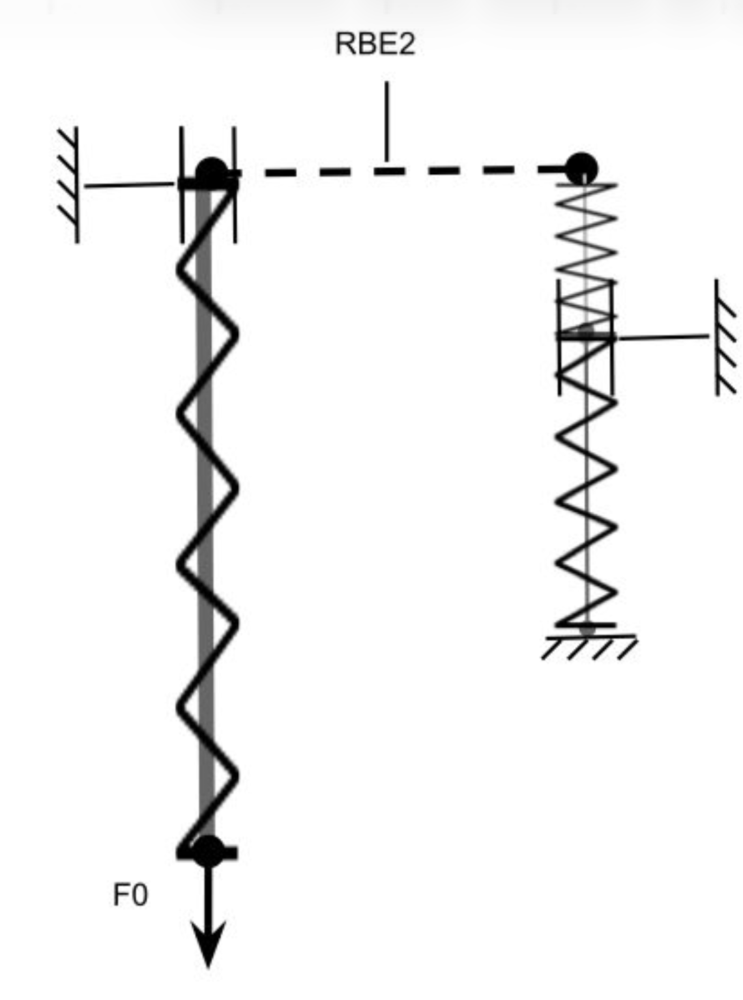
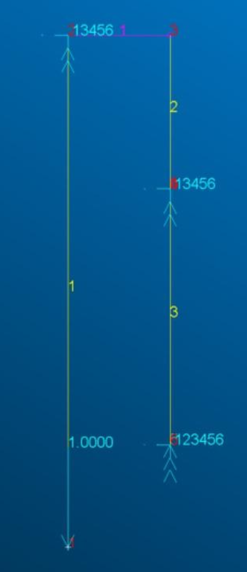
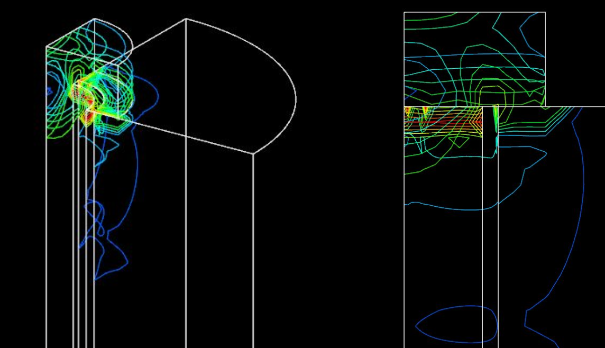

L'Enjeu Industriel
Les assemblages boulonnés sont des points critiques dans de nombreuses structures. Le risque principal réside dans la perte de précontrainte liée aux vibrations et dans la rupture par fatigue.
La difficulté majeure en bureau d'études consiste à trouver le bon compromis entre la simplification du modèle (calcul rapide) et la précision des résultats locaux. Ce projet vise à confronter un pré-dimensionnement analytique 1D avec un modèle volumique 3D.

Approche Analytique & Modèle 1D
L'étude a débuté par un calcul analytique de la précontrainte nécessaire pour contrer un effort axial de 10 000 N. En modélisant la vis et les plaques comme des ressorts en opposition, j'ai calculé :
- La rigidité de la vis ($k_b = 412$ kN/mm) et des plaques ($k_p = 1253$ kN/mm).
- La précontrainte minimale requise évaluée à 7.5 kN.
Ces résultats ont été vérifiés numériquement via un modèle 1D sur Patran (éléments BARRES + RBE2), offrant un temps de calcul instantané.

Modèle Volumique 3D & Concentrations de Contraintes
Si le modèle 1D valide l'équilibre global, il est aveugle aux phénomènes locaux. Pour valider l'intégrité structurelle de la pièce, j'ai développé un modèle 3D volumique avec une symétrie 1/4 pour optimiser le temps de calcul.
Cette modélisation a révélé une concentration critique de contraintes de Von Mises très localisée sous la tête de vis, siège privilégié d'amorçage de fissures en fatigue.

Bilan de l'Étude
Cette étude comparative souligne la complémentarité des approches de calcul en milieu industriel :
- L'approche Analytique et le Modèle 1D sont suffisants et redoutablement efficaces pour le dimensionnement statique global.
- Le Modèle 3D est lourd en temps de calcul, mais reste strictement indispensable pour prédire les concentrations de contraintes locales et évaluer la fatigue.